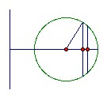

C is a circle radius a whose center lies a distance b from the coplanar line L. C is rotated through π about L to form a solid whose center of gravity lies on its surface. Find b/a.
Answer
(π + √(π2+2π-4))/(2π-4) = about 2.9028
Solution
The solid is half a torus. We can divide it into a large number of thin disks. Each disk has variable thickness, with thickness proportional to the distance from L. So we must integrate to find the distance of the centroid of the disk from L. Take the density to be kd, where d is the distance from L.

Take x to be distance along the line perpendicular to x, and θ to be the angle between the radius vector and the x-axis. We have x = a cos θ, so dx = - a sin θ dθ. The mass is ∫0π 2a sin θ (a sin θ dθ) k(b + a cos θ) = 2a2bk ∫0π sin2θ dθ + 2a3k ∫0π sin2θ cos θ dθ = a2bkπ + 0. So the mass times the centroid distance is ∫0π 2a2k sin2θ (a cos θ + b)2 dθ = 2a4k ∫0π sin2θ cos2θ dθ + 4a3bk ∫0π sin2θ cos θ dθ + 2a2b2k ∫0π sin2θ dθ = ½a4k ∫0π sin22θ dθ + 0 + a2b2kπ = ka2π(a2/4 + b2). So the centroid distance is b + a2/4b. Thus we can regard the mass as uniformly spread over a semicircle radius b + a2/4b.
We need another integration to find the distance of the mass of a semicircle radius r from its center. It is (1/πr) ∫0π r2 sin θ dθ = 2r/π. Thus the cm of the half-torus is a distance (2/π)(b + a2/4b) from L. We want it to be a distance b-a from L so that it lies on the surface. Thus (2/π)(b + a2/4b) = b - a, so (2π-4)b2 - 2πab - a2 = 0. Hence b/a = (π + √(π2+2π-4))/(2π-4) = about 2.9028.

© John Scholes
jscholes@kalva.demon.co.uk
19 January 2004
Last corrected/updated 19 Jan 04